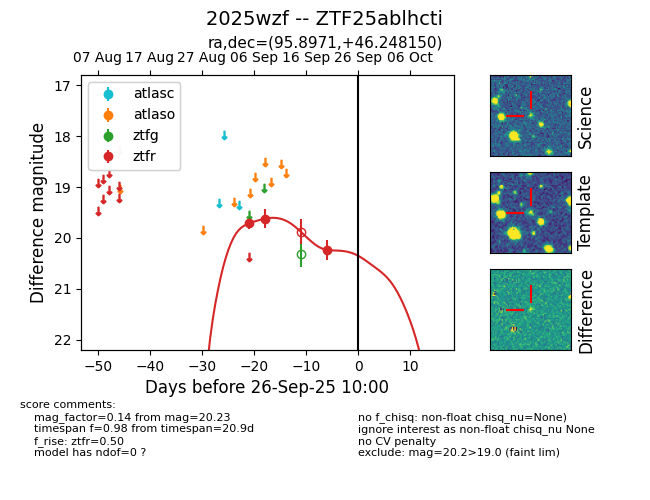
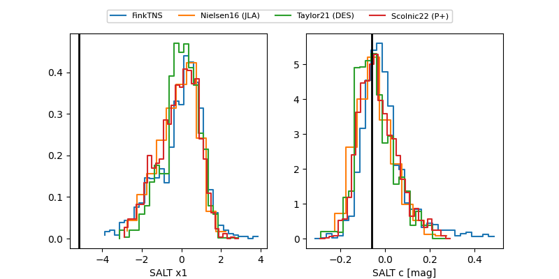

FINK: ZTF25ablhcti
Lasair: ZTF25ablhcti
ALeRCE: ZTF25ablhcti
TNS: 2025wzf
YSE: 2025wzf
ZTF25ablhcti (ztf,fink)
2025wzf (tns,yse)
equatorial (ra, dec) = (95.8971,+46.24815)
galactic (l, b) = (168.1556,+14.76006)


last ztfr=20.23
3 ztfr detections